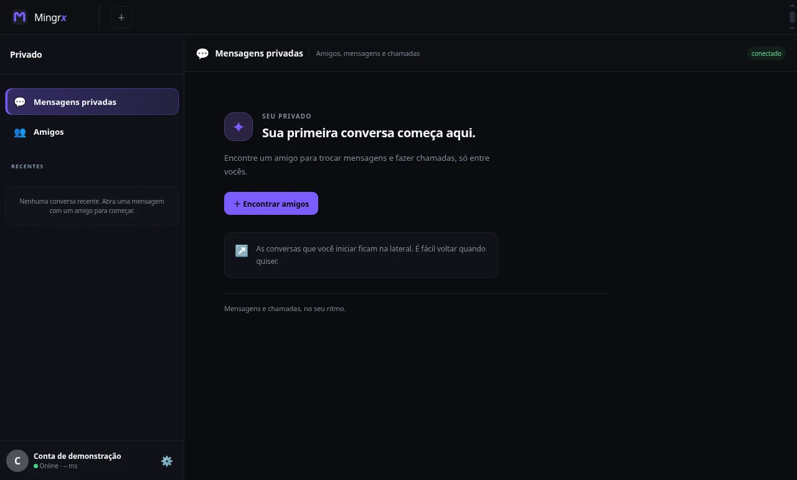

Mensagens privadas
Adicione amigos, troque mensagens e volte às conversas pela lista de recentes.
Aplicativo para Windows
Converse no privado, reúna seus amigos em comunidades e mostre uma tela ou janela durante a chamada.
Windows 10 e 11. Download gratuito na versão atual.

Recursos
Escolha como conversar, sem precisar trocar de aplicativo no meio.
Adicione amigos, troque mensagens e volte às conversas pela lista de recentes.
Faça uma chamada privada ou entre em uma sala de voz. Ative a câmera quando quiser.
Mostre uma tela ou janela durante a chamada para jogar, estudar ou acompanhar algo juntos.
Separe assuntos em canais de texto e voz. Convide o grupo por um link do mingrx.site.
Como começar
O site apresenta o Mingrx. As conversas e chamadas acontecem no aplicativo para Windows.
Instale a versão oficial para Windows 10 ou 11, distribuída pelo GitHub do projeto.
Cadastre seu e-mail e confirme o endereço para entrar no Mingrx.
Adicione um amigo pelo nome ou abra um convite para entrar em uma comunidade.
Privacidade
Mensagens privadas trocadas entre clientes compatíveis usam criptografia ponta a ponta: o conteúdo é criptografado no dispositivo antes de ir para a nuvem.
Perfis, amizades, canais e mensagens de comunidades são sincronizados para o serviço funcionar. A política explica quais dados são usados e como solicitar sua exclusão.
Ler a política de privacidadePerguntas frequentes
Sim. A versão atual do aplicativo para Windows pode ser baixada gratuitamente.
A versão oficial atual funciona no Windows 10 e no Windows 11. O site não substitui o aplicativo.
Um link do mingrx.site tenta abrir o aplicativo instalado com o código da comunidade. Se você ainda não tem o Mingrx, a página também oferece o download.
As versões oficiais para Windows incluem atualização automática. O aplicativo pode adiar a instalação enquanto você está em chamada ou tem uma mensagem em edição.
Essa proteção se aplica às mensagens privadas entre clientes compatíveis. Mensagens de comunidades e mensagens antigas de versões anteriores não têm essa mesma garantia. Consulte a política de privacidade para os detalhes.
Disponível para Windows 10 e 11.